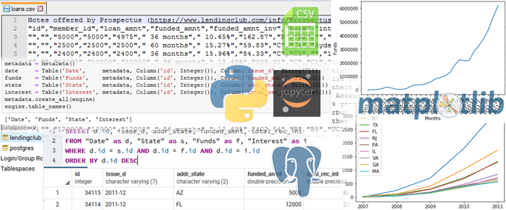

A GPU compute raytracer
My first foray into programming GPUs and raytraced graphics.
Tools
- C, Vulkan
- GLSL compute shaders
Features
- Parallel reduction
- Radix sort of Morton codes
- Parallel BVH construction

Asynchronous image viewer with Thumbnails
A quick and reliable way to preview large folders of images using GPU.
Large loading times were circumvented by making the viewer asynchronous via threads.
Tools
- C, Vulkan
- Descriptor extensions for flexible resource assignment
- Win32 threads
- STB libraries (image, image_write, truetype)
Features
- Handles folders up to 4096 images
- Handles images up to 25 megapixels
- Screenshot system (used to create footage of every Vulkan project)
- 60FPS (24-30FPS while recording screenshots)
Business analytics: Lending Club open dataset, 2007-2011
Simple insights into workings of a lending business in America.
Using a Jupyter Notebook, I look into the dynamics of application count, requested sums, funds total per country each year and per state, and save the data into a database for easy access with analytics tools that expect SQL.
Data
- Lending Club open dataset, 2007-2011
Tools
- Python
- Data manipulation libraries (Pandas, Numpy)
- Visualization libraries (PyPlot, Seaborn)

"A Flappy Fish”
Game development 101, sprites © Nintendo please don't sue
Tools
- C, Vulkan
- STB libraries (image, image_write, truetype)
Features
- Input processing
- Collision detection
Desktop media player YouTube playlist generator
Imagine you have a great YouTube series you want to watch, but you prefer the comforts of your desktop media player instead of your browser.
I use the YT API to import playlist data from the web and export playlist input files for my desktop media player of choice.
Tools
- Python
- YouTube Data API v3
- Google authentication libraries
- Regex, json, isodate
Results
- An input file serving as a YouTube playlist for the MPC-BE media player
Basic Vulkan Pipeline Demo
My “Black Triangle”.
Beginnings of a framework to tame the verbosity of Vulkan.
Tools
- C, Vulkan
- Metaprogramming (generation of Vulkan structures)
- STB libraries (image, image_write, truetype)
Features (most of these supplement every Vulkan project)
- Dynamic Vulkan function loading
- Memory pools for geometry memory management
- Matrix math for geometry manipulation
- Text overlay system
Online card game set price calculator
I cross reference two online databases, one for "Magic: the Gathering: card information and another for price information. This lets me quickly calculate a market price for any MtG collection or deck.
Tools
- Python web libraries - Requests, Scrapy selectors
Results
- A folder full of images of the cards (you might've noticed them in Viewer video)
- A conclusion: turns out, I can't afford to play Magic.

Apple iTunes Subscription RSS Feed Podcast Downloader
A tool to download podcasts from iTunes feed files, sped up by parallel downloads
Tools
- Python web libraries - Requests, Beautiful Soup
- Python Multiprocessing library
Results
- A folder full of mp3s.

Education and Experience
- Bauman’s Moscow State Technical University ('09-'11)
- Gameboloid (2015-2016)
- Worked on Woodland Quest, a Match-3 Game
- Integrated ad serving libraries
- Feature support and bug fixes
- Implemented UI elements
- Supplemental animations
- Russian Post (2017-2018)
- Side job while working on DataCamp and other self-training
- Data entry / database operations for package tracking
- Customer Service
- DataCamp courses (click for my completed courses)
- Pandas
- PostgreSQL
- SQLAlchemy
- Web Scraping